Data Sources for Non-democratic Politics Book
Xavier Marquez
2016-12-22
Democracy scores
Unified Democracy Scores
Several datasets of democracy scores are used in this book. The most commonly used scores are the Unified Democracy Scores of Pemstein, Meserve, and Melton (Pemstein, Meserve, and Melton 2010), as extended by me (Márquez 2016). A package to generate these scores, along with documentation, is available here: https://github.com/xmarquez/QuickUDS.
These extended unified democracy scores are available as extended_uds. (Simply type extended_uds to load the data). The main score used in the book to measure democracy is the variable index in this dataset. This is a 0-1 index of democracy that can be interpreted as a probability scale: values close to one mean that the country is almost certainly a democracy by current scholarly standards. This is available for a large number of country-years, including periods where the country may not have been considered a member of the system of states (indicated below by black dots):
library(tidyverse)
ggplot(data = extended_uds,
aes(x = forcats::fct_rev(reorder(country_name,year,FUN = min)),
y = year)) +
geom_tile(aes(fill = index)) +
geom_point(data = extended_uds %>% filter(!in_system), show.legend = FALSE) +
scale_fill_gradient2(midpoint = 0.5) +
coord_flip() +
labs(x = "", fill = "UD Score") +
theme(legend.position = "bottom")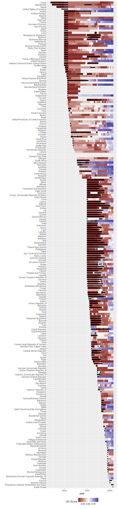
For more information about all the variables in this dataset, use ?extended_uds.
The UD scores are the result of a latent variable analysis of a large number of other democracy measures gathered by many different people. These democracy measures are also included in this package for convenience as the dataset democracy. For more information about all the variables in this dataset, use ?democracy. The variable index in extended_uds is, by construction, highly but not perfectly correlated with all the other measures of democracy:
library(GGally)
data <- full_join(extended_uds, democracy)
ggcorr(data %>%
select(index, arat_pmm:wahman_teorell_hadenius))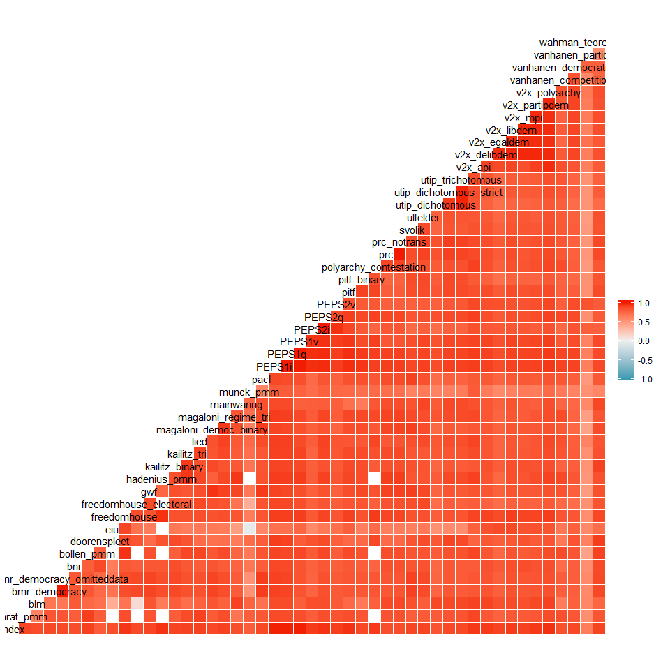
For further discussion of the correlations between the index of democracy and other measures of democracy, see my paper (Márquez 2016).
V-Dem (Varieties of Democracy) Dataset
I also use in the book a selection of variables from the Varieties of Democracy (V-Dem) project dataset (Coppedge et al. 2015). The full dataset can be downloaded here. The variables included in this package are the main democracy indexes, as well as indexes of civil society, executive constraints, and corruption. Use ?vdem for documentation on the included variables.
Population data
Several graphs in the book make use of world population data going back to the 19th century for all members of the state system compiled by Kristian Gleditsch (K. Gleditsch 2010) and extended by me to the present day with the help of the population data available through the World Development Indicators. I also use a dataset of world population compiled by Esteban Ortiz-Espina and Max Roser (Ortiz-Ospina and Roser 2016) to calculate the proportion of the world’s population represented by each country. Gleditsch’s original data is available here; Ortiz-Espina and Roser’s dataset is available here, including an extensive discussion of their sources.
For more info on included variables, use ?population_data. This data is available for a large number of countries, but it excludes periods when Gleditsch considers the country was not independent (indicated below by a lighter bar):
ggplot(data = population_data,
aes(x = year)) +
geom_bar(aes(alpha = in_system, weight = pop),
show.legend = FALSE,
width = 1) +
labs(x= "",
y = "Country population (millions)",
alpha = "In Gleditsch and Ward's \nsystem of states") +
theme_bw() +
theme(legend.position = "top") +
facet_grid(country_name ~ ., switch = "y") +
scale_y_continuous(labels = NULL, breaks = NULL) +
theme(strip.text.y = element_text(angle = 180),
strip.background = element_rect(fill = NA, color = NA),
panel.margin = unit(0, "lines"),
panel.border = element_rect(fill = NA))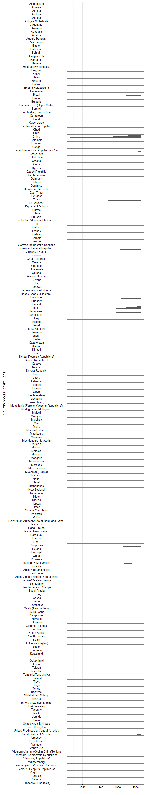
The majority of the populations are too small to be visible in this graph; try the graph with scale_y_log10(labels = NULL, breaks = NULL) instead.
Regime Classifications
This book uses data from several political regime datasets. These do not use the same criteria to classify political regimes, and they do not always agree on given classifications.
Magaloni, Chu, and Min
Some of the graphs in the book use the “Autocracies of the World” dataset by Magaloni, Chu, and Min (Magaloni, Chu, and Min 2013). The original data is available here. A selection of the variables in this dataset is available as magaloni. Use ?magaloni for more detail about the included variables.
The original dataset is available for the following countries:
ggplot(data = magaloni,
aes(x = forcats::fct_rev(reorder(country_name,year,FUN = min)),
y = year)) +
geom_tile(aes(fill = regime_nr, alpha = in_system)) +
labs(x = "", alpha = "In Gleditsch and Ward's \nsystem of states", fill = "Regime type") +
theme_bw() +
theme(legend.position = "bottom") +
guides(fill = guide_legend(title.position = "top", ncol = 2)) +
scale_fill_brewer(type = "qual") +
scale_y_continuous(breaks = unique(c(magaloni$year[ magaloni$year %% 12 == 0],
max(magaloni$year),
min(magaloni$year)))) +
coord_flip() 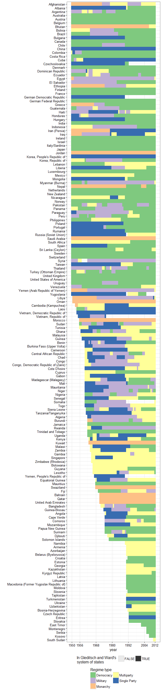
I have extended some of their classifications backwards in time with the help of the duration_nr variable in the original dataset; this “extended” version of the data is available as magaloni_extended:
ggplot(data = magaloni_extended,
aes(x = forcats::fct_rev(reorder(country_name,year,FUN = min)),
y = year)) +
geom_tile(aes(fill = regime_nr, alpha = in_system)) +
labs(x = "", alpha = "In Gleditsch and Ward's \nsystem of states", fill = "Regime type") +
theme_bw() +
theme(legend.position = "bottom") +
guides(fill = guide_legend(title.position = "top", ncol = 2)) +
scale_fill_brewer(type = "qual") +
scale_y_continuous(breaks = unique(c(magaloni_extended$year[ magaloni_extended$year %% 25 == 0],
max(magaloni_extended$year),
min(magaloni_extended$year)))) +
coord_flip() 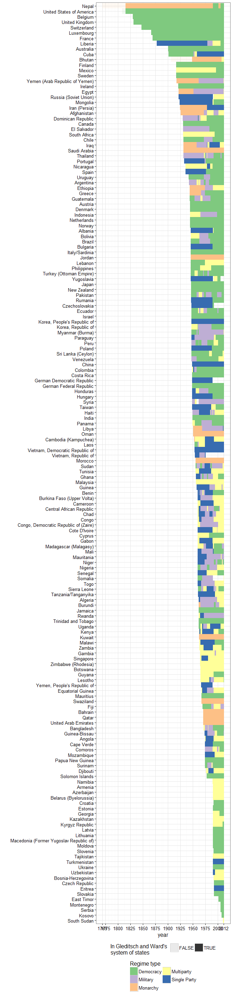
Wahman, Teorell, Hadenius
The personal power index makes use of the “Authoritarian Regimes Data Set”, version 5.0, by Axel Hadenius, Jan Teorell, & Michael Wahman (Wahman, Teorell, and Hadenius 2013). The original dataset can be downloaded here. A selection of variables from this dataset is included as wahman_teorell; use ?wahman_teorell for more detail on included variables.
This dataset contains two different measures of regime type, and a couple of measures of personalism:
ggplot(data = wahman_teorell,
aes(x = forcats::fct_rev(reorder(country_name, year, FUN = min)),
y = year)) +
geom_tile(aes(fill = forcats::fct_relevel(regime1ny, "Democracy"), alpha = in_system)) +
labs(x = "", alpha = "In Gleditsch and Ward's \nsystem of states", fill = "Regime type") +
theme_bw() +
theme(legend.position = "bottom") +
guides(fill = guide_legend(title.position = "top", ncol = 2)) +
scale_fill_brewer(type = "qual") +
scale_y_continuous(breaks = unique(c(wahman_teorell$year[ wahman_teorell$year %% 10 == 0],
max(wahman_teorell$year),
min(wahman_teorell$year)))) +
coord_flip() 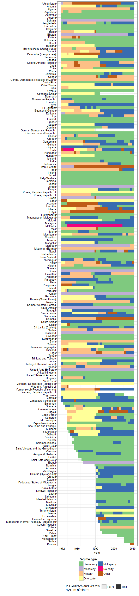
ggplot(data = wahman_teorell,
aes(x = forcats::fct_rev(reorder(country_name, year, FUN = min)),
y = year)) +
geom_tile(aes(fill = forcats::fct_relevel(regimeny, "Democracy"), alpha = in_system)) +
labs(x = "", alpha = "In Gleditsch and Ward's \nsystem of states", fill = "Regime type") +
theme_bw() +
theme(legend.position = "bottom") +
guides(fill = guide_legend(title.position = "top", ncol = 2)) +
scale_y_continuous(breaks = unique(c(wahman_teorell$year[ wahman_teorell$year %% 10 == 0],
max(wahman_teorell$year),
min(wahman_teorell$year)))) +
coord_flip() 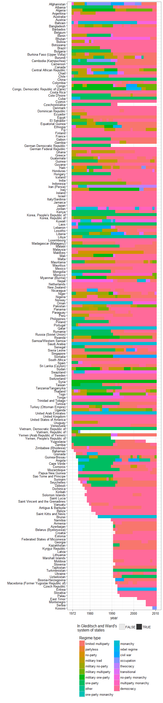
Kailitz
I also make use in several graphs and in the development of the personal power index of a measure of regime type developed by Steffen Kailitz (Kailitz 2013). This dataset in particular contains an indicator of whether the regime was communist that is particularly useful. For more info on the included variables, use ?kailitz_yearly.
The measure is available for the following countries:
ggplot(data = kailitz_yearly,
aes(x = forcats::fct_rev(reorder(country_name,year,FUN = min)),
y = year)) +
geom_tile(aes(fill = combined_regime, alpha = in_system)) +
labs(x = "",
alpha = "In Gleditsch and Ward's \nsystem of states",
fill = "Regime type") +
coord_flip() +
theme_bw() +
theme(legend.position = "bottom") +
guides(fill = guide_legend(title.position = "top", ncol = 2)) +
scale_y_continuous(breaks = unique(c(kailitz_yearly$year[ kailitz_yearly$year %% 10 == 0],
max(kailitz_yearly$year),
min(kailitz_yearly$year)))) +
coord_flip() 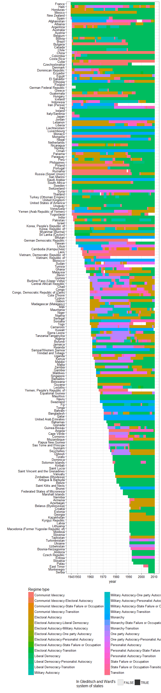
Geddes, Wright, and Frantz
The most important measure of regime type used in the book was developed by Geddes, Wright, and Frantz (Geddes, Wright, and Frantz 2014). The original data is available here. This dataset comes in three versions: two country-year versions (all_gwf and all_gwf_extended_yearly) and a case version with (all_gwf_periods). all_gwf_extended_yearly extends Geddes, Wright, and Frantz’s regime classifications backwards using the information encoded in the start dates and end dates of the cases in the original dataset (all_gwf_periods). For details on the variables included in these datasets, use ?all_gwf, ?all_gwf_extended_yearly, and ?all_gwf_periods.
This contains one measure of regime type:
ggplot(data = all_gwf_extended_yearly,
aes(x = forcats::fct_rev(reorder(country_name,year,FUN = min)),
y = year)) +
geom_tile(aes(fill = gwf_full_regimetype, alpha = in_system)) +
labs(x = "", alpha = "In Gleditsch and Ward's \nsystem of states",
fill = "Regime type") +
coord_flip() +
theme_bw() +
theme(legend.position = "bottom") +
guides(fill = guide_legend(title.position = "top", ncol = 2)) +
scale_y_continuous(breaks = unique(c(all_gwf_extended_yearly$year[ all_gwf_extended_yearly$year %% 50 == 0],
max(all_gwf_extended_yearly$year),
min(all_gwf_extended_yearly$year)))) +
coord_flip() 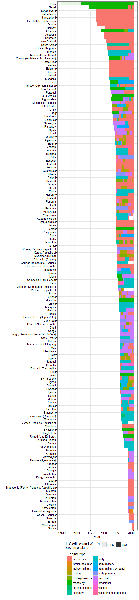
Regime Characteristics
The book uses several measures of regime characteristics to create various graphs.
Polity
Several graphs in the book use the Polity IV dataset (Marshall, Gurr, and Jaggers 2010) for its measures of regime characteristics rather than for its democracy measure. For details of the variables included, use
It contains several measures of regime characteristics for a large number of countries (all states with populations greater than 500,000 people). Here I plot the executive recruitment score:
ggplot(data = polity_annual,
aes(x = forcats::fct_rev(reorder(country_name, year, FUN = min)),
y = year)) +
geom_tile(aes(fill = exrec, alpha = in_system)) +
scale_fill_brewer(type = "div", palette = "RdBu") +
labs(x = "",
alpha = "In Gleditsch and Ward's \nsystem of states",
fill = "Executive recruitment type") +
theme_bw() +
theme(legend.position = "bottom") +
guides(fill = guide_legend(title.position = "top", ncol = 2)) +
scale_y_continuous(breaks = unique(c(polity_annual$year[ polity_annual$year %% 50 == 0],
max(polity_annual$year),
min(polity_annual$year)))) +
coord_flip() 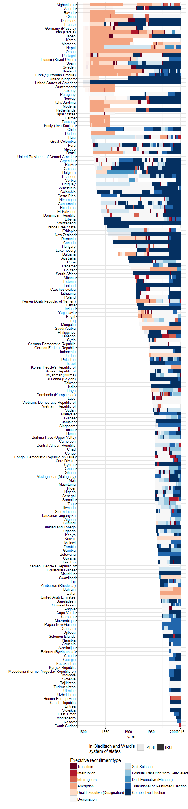
Svolik institutions data
Some of the graphs in the book make use of data on institutions in non-democratic regimes collected by Milan Svolik (Svolik 2012). The original data can be found here. For more information on the included variables, use ?svolik_institutions.
This dataset includes information about military, party, and executive and legislative control in non-democratic regimes:
ggplot(data = svolik_institutions,
aes(x = forcats::fct_rev(reorder(country_name, year, FUN = min)),
y = year)) +
geom_tile(aes(fill = forcats::fct_relevel(party,
"banned",
"single"),
alpha = in_system)) +
scale_fill_brewer(type = "div", palette = "RdBu") +
labs(x = "",
alpha = "In Gleditsch and Ward's \nsystem of states",
fill = "Party restrictions") +
theme_bw() +
theme(legend.position = "bottom") +
guides(fill = guide_legend(title.position = "top", ncol = 2)) +
scale_y_continuous(breaks = unique(c(svolik_institutions$year[ svolik_institutions$year %% 10 == 0],
max(svolik_institutions$year),
min(svolik_institutions$year)))) +
coord_flip() 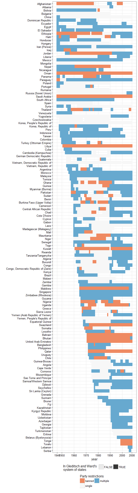
ggplot(data = svolik_institutions,
aes(x = forcats::fct_rev(reorder(country_name, year, FUN = min)),
y = year)) +
geom_tile(aes(fill = forcats::fct_relevel(military,
"personal",
"corporate",
"indirect"),
alpha = in_system)) +
scale_fill_brewer(type = "div", palette = "RdBu") +
labs(x = "",
alpha = "In Gleditsch and Ward's \nsystem of states",
fill = "Type of military control") +
theme_bw() +
theme(legend.position = "bottom") +
guides(fill = guide_legend(title.position = "top", ncol = 2)) +
scale_y_continuous(breaks = unique(c(svolik_institutions$year[ svolik_institutions$year %% 10 == 0],
max(svolik_institutions$year),
min(svolik_institutions$year)))) +
coord_flip() 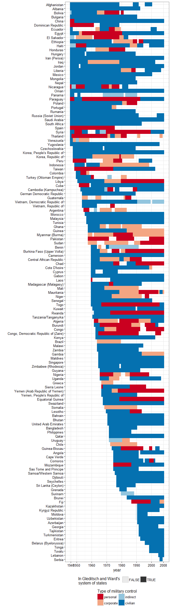
ggplot(data = svolik_institutions,
aes(x = forcats::fct_rev(reorder(country_name, year, FUN = min)),
y = year)) +
geom_tile(aes(fill = forcats::fct_relevel(legislative,
"none",
"unelected or appointed",
"one party or candidate per seat",
"nonpartisan",
"largest party controls more than 75% of seats"),
alpha = in_system)) +
scale_fill_brewer(type = "div", palette = "RdBu") +
labs(x = "",
alpha = "In Gleditsch and Ward's \nsystem of states",
fill = "Type of legislative control") +
theme_bw() +
theme(legend.position = "bottom") +
guides(fill = guide_legend(title.position = "top", ncol = 2)) +
scale_y_continuous(breaks = unique(c(svolik_institutions$year[ svolik_institutions$year %% 10 == 0],
max(svolik_institutions$year),
min(svolik_institutions$year)))) +
coord_flip() 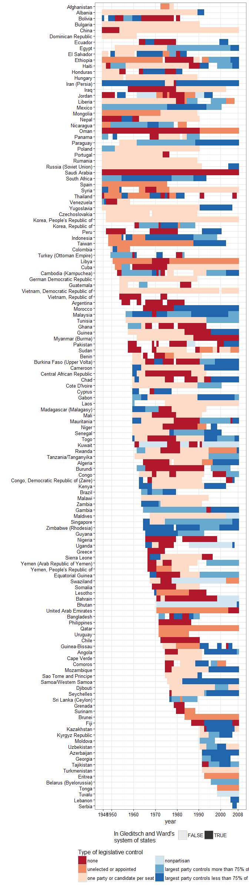
PIPE
In a few graphs I use some variables from the Political Institutions and Political Events dataset compiled by Adam Przeworski (Przeworski 2013). The original data is available here. This contains information about suffrage and elections in a large number of countries; for details on the included variables, type ?PIPE.
This has measure has some errors and problems, but it’s still quite interesting. Here’s a plot of the restrictions on the franchise:
data <- PIPE %>%
group_by(country_name) %>%
arrange(year) %>%
mutate(total_elections = preselec + legelec,
total_elections = ifelse(is.na(total_elections) & !is.na(f),
0,
total_elections)) %>%
filter(!is.na(total_elections)) %>%
mutate(cumulative_elections = cumsum(total_elections),
f = ifelse(max(cumulative_elections) == 0 & is.na(f),
0,
f)) %>%
ungroup() %>%
mutate(f_male = ifelse(f < 10,
f,
round(f/10)),
f_female = ifelse(f < 10,
0,
f %% 10),
f_male = ifelse(f_male %in% c(0,1), f_male, f_male + 1),
f_male = ifelse(is.na(f_male) & (cumulative_elections >= 1),
2,
f_male),
f_female = ifelse(f_male == 2, 0, f_female),
f_female = factor(f_female, labels = c("0-No inclusion / not indicated",
"1-Narrower than men",
"2-Equal to men")),
f_male = factor(f_male,
labels = c("0-No suffrage",
"1-Estate",
"2-Subnational",
"3-Property only",
"4-(Property OR
income OR
taxes OR
exercise of profession OR
educational titles)
AND literacy",
"5-Property OR
income OR
taxes OR
exercise of profession OR
educational titles",
"6-Literacy only
OR (Literacy
OR property OR
income OR
taxes OR
exercise of profession OR
educational titles)",
"7-All the economically independent",
"8-All"),
ordered = TRUE)
)
ggplot(data = data,
aes(x = forcats::fct_rev(reorder(country_name, year, FUN = min)),
y = year)) +
geom_tile(aes(fill = f_male,
alpha = f_female)) +
scale_fill_brewer(type = "div", palette = "RdBu") +
labs(x = "",
alpha = "Female inclusion",
fill = "Type of franchise") +
theme_bw() +
theme(legend.position = "bottom") +
guides(fill = guide_legend(title.position = "top", ncol = 1),
alpha = guide_legend(title.position = "top", ncol = 2)) +
scale_y_continuous(breaks = unique(c(PIPE$year[ PIPE$year %% 25 == 0],
max(PIPE$year),
min(PIPE$year)))) +
scale_alpha_discrete(range = c(0.3,1)) +
coord_flip()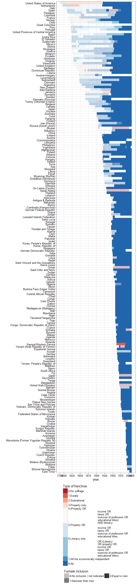
LIED
The Lexical Index of Democracy and Autocracy (Skaaning, Gerring, and Bartusevičius 2015) extends and corrects the PIPE dataset, and it provides an independent measure of male and female suffrage, as well as measures of whether the executive is elected, there is an elected assembly, and a few other variables. For details on included variables, type ?lied. The original dat and codebook are available here
Here’s the suffrage picture using LIED data:
data <- lied
ggplot(data = data %>%
mutate(male_suffrage = (male_suffrage > 0),
female_suffrage = (female_suffrage > 0)),
aes(x = forcats::fct_rev(reorder(country_name, year, FUN = min)),
y = year)) +
geom_tile(aes(fill = male_suffrage,
alpha = female_suffrage)) +
labs(x = "",
alpha = "Female inclusion?",
fill = "Full male suffrage?") +
theme_bw() +
theme(legend.position = "bottom") +
guides(fill = guide_legend(title.position = "top", ncol = 1),
alpha = guide_legend(title.position = "top", ncol = 2)) +
scale_y_continuous(breaks = unique(c(lied$year[ lied$year %% 25 == 0],
max(lied$year),
min(lied$year)))) +
scale_alpha_discrete(range = c(0.3,1)) +
coord_flip()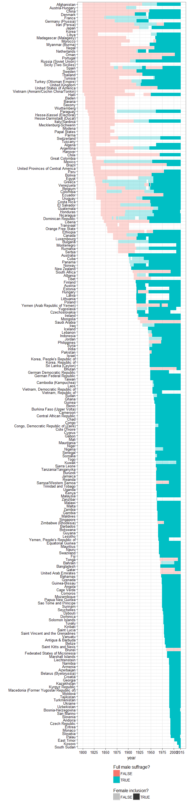
The LIED data and the PIPE data differ subtly, due to coding differences:
data <- full_join(PIPE %>%
select(country_name,GWn,year,f_simple,f),
lied %>%
select(country_name,GWn,year,male_suffrage,female_suffrage)) %>%
mutate(inconsistent = (male_suffrage == 1 & female_suffrage == 1 & f != 72) |
(male_suffrage == 1 & female_suffrage == 0 & !(f %in% c(7,71,NA))))
data %>%
filter(inconsistent) %>%
group_by(country_name, f_simple, f, male_suffrage, female_suffrage) %>%
summarise(min_year = min(year), max_year = max(year), num_years = n()) %>%
knitr::kable(col.names = c("Country",
"PIPE franchise (simplified)",
"PIPE franchise (full)",
"LIED male suffrage",
"LIED female suffrage",
"Min year",
"Max year",
"Num. years"))| Country | PIPE franchise (simplified) | PIPE franchise (full) | LIED male suffrage | LIED female suffrage | Min year | Max year | Num. years |
|---|---|---|---|---|---|---|---|
| Australia | 4- All male | 7 | 1 | 1 | 1901 | 1901 | 1 |
| Austria-Hungary | 1 - Class restricted, male only | 4 | 1 | 0 | 1896 | 1917 | 22 |
| Belgium | 6 - Universal | 72 | 1 | 0 | 1948 | 1948 | 1 |
| Canada | 6 - Universal | 72 | 1 | 0 | 1918 | 1920 | 3 |
| Germany (Prussia) | 1 - Class restricted, male only | 6 | 1 | 0 | 1871 | 1917 | 47 |
| Germany (Prussia) | 6 - Universal | 72 | 1 | 0 | 1918 | 1918 | 1 |
| Greece | 6 - Universal | 72 | 1 | 0 | 1953 | 1955 | 3 |
| Guatemala | 6 - Universal | 72 | 1 | 0 | 1965 | 1965 | 1 |
| Iraq | 4- All male | 7 | 1 | 1 | 1958 | 1979 | 22 |
| Italy/Sardinia | 6 - Universal | 72 | 1 | 0 | 1945 | 1945 | 1 |
| Lebanon | 6 - Universal | 72 | 1 | 0 | 1944 | 1951 | 8 |
| Netherlands | 6 - Universal | 72 | 1 | 0 | 1919 | 1921 | 3 |
| Nicaragua | 6 - Universal | 72 | 1 | 0 | 1955 | 1956 | 2 |
| Palau | 4- All male | 7 | 1 | 1 | 1994 | 2008 | 15 |
| Qatar | 0 - No suffrage | 0 | 1 | 1 | 2003 | 2008 | 6 |
| Rumania | 1 - Class restricted, male only | 4 | 1 | 0 | 1938 | 1945 | 8 |
| Somalia | 0 - No suffrage | 0 | 1 | 1 | 1991 | 2003 | 13 |
| Syria | 5 - All male, some female | 71 | 1 | 1 | 1954 | 1972 | 19 |
| Tuvalu | 4- All male | 7 | 1 | 1 | 1978 | 2008 | 31 |
Leader data
A number of graphs in the book use data on leaders.
Archigos
The main leader data used is the Archigos dataset of Gleditsch, Goemans, and Chiozza (Goemans, Gleditsch, and Chiozza 2009). The original data is available here; type ?archigos for more info.
We can plot the leaders in each country:
ggplot(data = archigos,
aes(x = forcats::fct_rev(reorder(country_name, startdate, FUN = min)),
y = startdate)) +
geom_point(alpha = 0.2, color = "red") +
geom_text(aes(label = leader), check_overlap = TRUE, size = 2) +
labs(x = "") +
theme_bw() +
coord_flip() 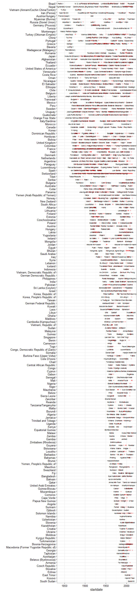
Svolik
We also have leader data from Svolik (Svolik 2012), which is only available for those regimes Svolik codes as non-democratic. Svolik bases his data on an earlier version of Archigos, but he also codes the political affiliations of earlier and later leaders; type ?svolik_leader for more info.
Here’s what the aggregate data looks like:
ggplot(data = svolik_leader,
aes(x = forcats::fct_rev(reorder(country_name, startdate, FUN = min)),
y = startdate)) +
geom_point(alpha = 0.4, aes(color = pol_aff, shape = entry_summary)) +
geom_text(aes(label = leader, color = pol_aff),
check_overlap = TRUE, size = 2) +
labs(x = "",
color = "Political affiliation",
shape = "Mode of entry into office") +
theme_bw() +
theme(legend.position = "top") +
guides(color = guide_legend(title.position = "top", ncol = 2),
shape = guide_legend(title.position = "top", ncol = 2)) +
coord_flip() 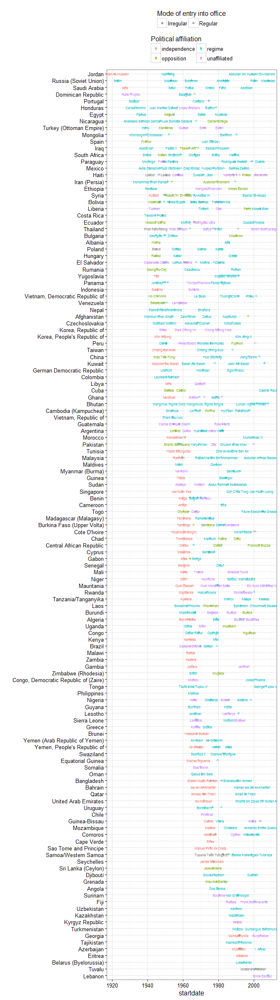
Coup data
There are two sources for coup data we can use. The first is from Powell and Thyne (Powell and Thyne 2011). This data is continuously updated; the original source is available here.
Here is what the data looks like:
ggplot(data = powell_thyne,
aes(x = forcats::fct_rev(country_name),
y = date)) +
geom_point(aes(color = attempt_type)) +
labs(x = "",
color = "Attempt type") +
theme_bw() +
theme(legend.position = "top") +
guides(fill = guide_legend(title.position = "top")) +
coord_flip() 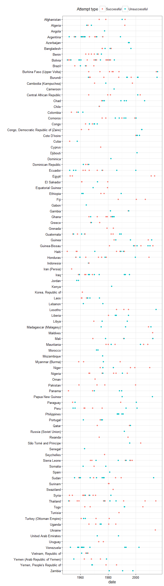
Though this dataset contains info on all recent coups, it does not show coups earlier than 1950. The PIPE dataset contains rougher info on successful coups before then:
ggplot(data = PIPE %>%
filter(coups > 0) ,
aes(x = forcats::fct_rev(country_name),
y = year)) +
geom_point(aes(color = as.factor(coups))) +
labs(x = "",
color = "Number of coups") +
theme_bw() +
theme(legend.position = "top") +
guides(fill = guide_legend(title.position = "top")) +
coord_flip()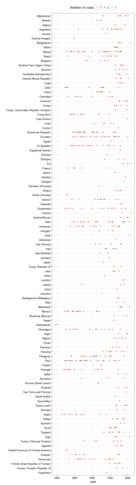
This data is not correlated with Powell and Thyne’s data, though:
data <- full_join(PIPE %>%
filter(coups > 0) %>%
select(country_name,
GWn,
year,
coups),
powell_thyne %>%
filter(coup == 2) %>%
group_by(country_name,
GWn,
year) %>%
summarise(n = n())) %>%
mutate_at(funs(ifelse(is.na(.),0,.)), .cols = c("coups","n")) %>%
rename(pipe_coups = coups, powell_coups = n)
cor(data$pipe_coups, data$powell_coups, use = "pairwise")## [1] -0.092433data %>%
filter(year >= 1950,
year <= 2008,
pipe_coups != powell_coups) %>%
count(pipe_coups, powell_coups) %>%
knitr::kable(col.names = c("Number of coups in PIPE",
"Number of coups in Powell-Thyne",
"Number of country-years with discrepancies"),
caption = "Country-years where PIPE disagrees with Powell-Thyne in the 1950-2008 period")| Number of coups in PIPE | Number of coups in Powell-Thyne | Number of country-years with discrepancies |
|---|---|---|
| 0 | 1 | 17 |
| 0 | 2 | 1 |
| 1 | 0 | 59 |
| 1 | 2 | 3 |
| 2 | 0 | 5 |
| 2 | 1 | 4 |
| 2 | 3 | 1 |
data %>%
filter(year >= 1950,
year <= 2008,
pipe_coups == powell_coups) %>%
count(pipe_coups, powell_coups) %>%
knitr::kable(col.names = c("Number of coups in PIPE",
"Number of coups in Powell-Thyne",
"Number of country-years where they agree"),
caption = "Country-years where PIPE agrees with Powell-Thyne in the 1950-2008 period")| Number of coups in PIPE | Number of coups in Powell-Thyne | Number of country-years where they agree |
|---|---|---|
| 1 | 1 | 175 |
| 2 | 2 | 9 |
data %>%
filter(year >= 1950,
year <= 2008,
pipe_coups != powell_coups) %>%
knitr::kable(col.names = c("Country","GWn","year", "Number of coups in PIPE", "Number of coups in Powell-Thyne"))| Country | GWn | year | Number of coups in PIPE | Number of coups in Powell-Thyne |
|---|---|---|---|---|
| Afghanistan | 700 | 1979 | 2 | 0 |
| Afghanistan | 700 | 1996 | 1 | 0 |
| Afghanistan | 700 | 2001 | 1 | 0 |
| Argentina | 160 | 1981 | 1 | 0 |
| Bangladesh | 771 | 2006 | 1 | 0 |
| Bolivia | 145 | 1979 | 2 | 1 |
| Bolivia | 145 | 1982 | 1 | 0 |
| Brazil | 140 | 1954 | 1 | 0 |
| Brazil | 140 | 1964 | 1 | 2 |
| Cambodia (Kampuchea) | 811 | 1975 | 1 | 0 |
| Cambodia (Kampuchea) | 811 | 1978 | 1 | 0 |
| Chad | 483 | 1979 | 1 | 0 |
| Chad | 483 | 1982 | 1 | 0 |
| Chad | 483 | 1990 | 1 | 0 |
| Comoros | 581 | 1976 | 1 | 0 |
| Comoros | 581 | 1995 | 1 | 0 |
| Congo | 484 | 1968 | 1 | 2 |
| Congo | 484 | 1969 | 1 | 0 |
| Congo | 484 | 1979 | 1 | 0 |
| Congo | 484 | 1997 | 1 | 0 |
| Congo, Democratic Republic of (Zaire) | 490 | 1997 | 1 | 0 |
| Cote D’Ivoire | 437 | 1999 | 1 | 0 |
| Cuba | 40 | 1959 | 1 | 0 |
| Dominican Republic | 42 | 1961 | 1 | 0 |
| Dominican Republic | 42 | 1962 | 2 | 0 |
| Ecuador | 130 | 2000 | 1 | 0 |
| Ethiopia | 530 | 1991 | 1 | 0 |
| Fiji | 950 | 1987 | 2 | 1 |
| Gabon | 481 | 1964 | 2 | 0 |
| Georgia | 372 | 1991 | 1 | 0 |
| Guatemala | 90 | 1993 | 1 | 0 |
| Guinea-Bissau | 404 | 1998 | 1 | 0 |
| Haiti | 41 | 1957 | 2 | 3 |
| Haiti | 41 | 2004 | 1 | 0 |
| Hungary | 310 | 1956 | 2 | 0 |
| India | 750 | 2006 | 1 | 0 |
| Iran (Persia) | 630 | 1979 | 1 | 0 |
| Iran (Persia) | 630 | 1981 | 1 | 0 |
| Korea, Republic of | 732 | 1960 | 1 | 0 |
| Korea, Republic of | 732 | 1980 | 1 | 0 |
| Laos | 812 | 1959 | 1 | 0 |
| Laos | 812 | 1975 | 1 | 0 |
| Liberia | 450 | 1990 | 1 | 0 |
| Madagascar (Malagasy) | 580 | 1972 | 1 | 0 |
| Madagascar (Malagasy) | 580 | 1975 | 1 | 0 |
| Mauritania | 435 | 1979 | 1 | 0 |
| Myanmar (Burma) | 775 | 1997 | 1 | 0 |
| Nepal | 790 | 1960 | 1 | 0 |
| Nicaragua | 93 | 1956 | 1 | 0 |
| Nicaragua | 93 | 1979 | 1 | 0 |
| Pakistan | 770 | 1969 | 1 | 0 |
| Panama | 95 | 1955 | 1 | 0 |
| Panama | 95 | 1983 | 1 | 0 |
| Panama | 95 | 1989 | 1 | 0 |
| Rumania | 360 | 1989 | 1 | 0 |
| Rwanda | 517 | 2000 | 1 | 0 |
| Sao Tome and Principe | 403 | 1995 | 1 | 0 |
| Sierra Leone | 451 | 1992 | 2 | 1 |
| Somalia | 520 | 1991 | 1 | 0 |
| Sudan | 625 | 1971 | 2 | 0 |
| Surinam | 115 | 1980 | 1 | 2 |
| Surinam | 115 | 1990 | 1 | 0 |
| Syria | 652 | 1962 | 2 | 1 |
| Thailand | 800 | 1973 | 1 | 0 |
| Uganda | 500 | 1979 | 1 | 0 |
| Uganda | 500 | 1986 | 1 | 0 |
| Venezuela | 101 | 1952 | 1 | 0 |
| Venezuela | 101 | 1958 | 1 | 0 |
| Yemen (Arab Republic of Yemen) | 678 | 1977 | 1 | 0 |
| Yemen (Arab Republic of Yemen) | 678 | 1978 | 1 | 0 |
| Saudi Arabia | 670 | 1964 | 1 | 0 |
| Yemen, People’s Republic of | 680 | 1969 | 1 | 0 |
| Bolivia | 145 | 1951 | 0 | 1 |
| Burkina Faso (Upper Volta) | 439 | 1974 | 0 | 1 |
| Congo, Democratic Republic of (Zaire) | 490 | 1960 | 0 | 1 |
| Cote D’Ivoire | 437 | 1999 | 0 | 1 |
| Egypt | 651 | 1954 | 0 | 1 |
| Ethiopia | 530 | 1977 | 0 | 1 |
| Lesotho | 570 | 1994 | 0 | 1 |
| Mauritania | 435 | 2008 | 0 | 1 |
| Myanmar (Burma) | 775 | 1958 | 0 | 1 |
| Pakistan | 770 | 1971 | 0 | 1 |
| São Tomé and Principe | 403 | 2003 | 0 | 1 |
| Swaziland | 572 | 1983 | 0 | 1 |
| Syria | 652 | 1969 | 0 | 1 |
| Tunisia | 616 | 1987 | 0 | 1 |
| Vietnam, Republic of | 817 | 1963 | 0 | 1 |
| Vietnam, Republic of | 817 | 1964 | 0 | 1 |
| Vietnam, Republic of | 817 | 1965 | 0 | 2 |
| Yemen, People’s Republic of | 680 | 1978 | 0 | 1 |
data <- bind_rows(PIPE %>%
filter(coups > 0) %>%
select(country_name,
GWn,
year,
coups) %>%
mutate(source = "PIPE"),
powell_thyne %>%
filter(coup == 2) %>%
group_by(country_name,
GWn,
year) %>%
summarise(coups = n()) %>%
mutate(source = "Powell-Thyne"))
ggplot(data = data %>%
filter(coups > 0) ,
aes(x = forcats::fct_rev(country_name),
y = year)) +
geom_point(aes(color = source), alpha = 0.3) +
labs(x = "",
color = "Source") +
theme_bw() +
theme(legend.position = "top") +
guides(fill = guide_legend(title.position = "top")) +
coord_flip()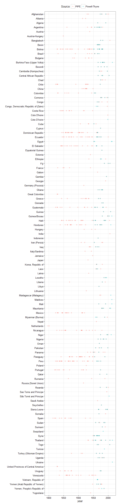
Elections data
There are two sources of election data. The first is from the National Elections in Democracy and Autocracy (NELDA) dataset (Hyde and Marinov 2012). We use only a minimal selection of columns indicating the dates and types of elections; for details of the included variables, type ?nelda. The original data is available here.
This data is available for the following countries:
ggplot(data = nelda,
aes(x = forcats::fct_rev(country_name),
y = year)) +
geom_point(aes(color = types),
alpha = 0.3) +
labs(x = "",
color = "Election type") +
theme_bw() +
theme(legend.position = "top") +
guides(color = guide_legend(title.position = "top")) +
coord_flip()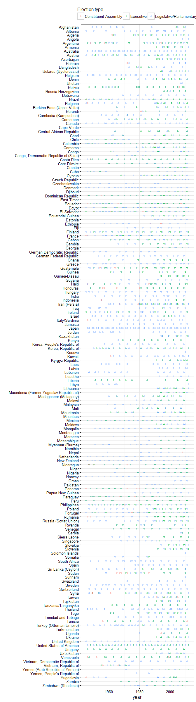
There is also election data in PIPE:
data <- PIPE %>%
select(country_name,
year,
preselec,
legelec) %>%
reshape2::melt(measure.vars = c("preselec",
"legelec")) %>%
filter(value > 0) %>%
rename(types = variable,
num_elections = value) %>%
mutate(types = plyr::mapvalues(types,
from = c("preselec",
"legelec"),
to = c("Executive",
"Legislative/Parliamentary")),
source = "PIPE") %>%
bind_rows(nelda %>%
group_by(country_name,
year,
types) %>%
summarise(num_elections = n()) %>%
mutate(source = "NELDA"))
ggplot(data = data,
aes(x = forcats::fct_rev(country_name),
y = year)) +
geom_point(aes(color = source, shape = types),
alpha = 0.3) +
labs(x = "",
shape = "Election type",
color = "Dataset") +
theme_bw() +
theme(legend.position = "top") +
guides(color = guide_legend(title.position = "top")) +
coord_flip()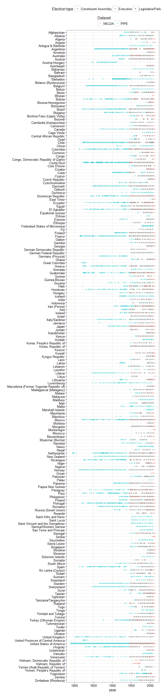
This data is highly but not perfectly correlated with NELDA; mostly it is a matter of NELDA picking up more elections than PIPE.
data2 <- data %>%
reshape2::dcast(country_name + year ~ source,
fun.aggregate = sum,
value.var = "num_elections")
nelda_shell <- nelda %>%
group_by(country_name) %>%
do(data.frame(year = min(.$year):max(.$year))) %>%
ungroup()
data2 <- inner_join(nelda_shell, data2) %>%
filter(year <= 2008)
cor(data2$NELDA, data2$PIPE)## [1] 0.5135496data2 %>%
count(NELDA, PIPE, NELDA < PIPE, NELDA > PIPE) %>%
ungroup() %>%
mutate(total = sum(n), prop = n/total) %>%
group_by(`NELDA > PIPE`, `NELDA < PIPE`) %>%
mutate(prop_2 = sum(prop),
prop = scales::percent(prop),
prop_2 = scales::percent(prop_2)) %>%
arrange(`NELDA > PIPE`,`NELDA < PIPE`) %>%
knitr::kable(col.names = c("NELDA count of elections in country-year",
"PIPE count of electios in country-year",
"NELDA > PIPE",
"NELDA < PIPE",
"Number of elections in group",
"Total elections",
"Proportion of total",
"Proportion of group")) | NELDA count of elections in country-year | PIPE count of electios in country-year | NELDA > PIPE | NELDA < PIPE | Number of elections in group | Total elections | Proportion of total | Proportion of group |
|---|---|---|---|---|---|---|---|
| 1 | 1 | FALSE | FALSE | 1214 | 2247 | 54.0% | 69.9% |
| 2 | 2 | FALSE | FALSE | 356 | 2247 | 15.8% | 69.9% |
| 0 | 1 | TRUE | FALSE | 155 | 2247 | 6.90% | 12.3% |
| 0 | 2 | TRUE | FALSE | 9 | 2247 | 0.40% | 12.3% |
| 1 | 2 | TRUE | FALSE | 109 | 2247 | 4.85% | 12.3% |
| 1 | 3 | TRUE | FALSE | 1 | 2247 | 0.04% | 12.3% |
| 2 | 3 | TRUE | FALSE | 2 | 2247 | 0.09% | 12.3% |
| 1 | 0 | FALSE | TRUE | 140 | 2247 | 6.23% | 17.8% |
| 2 | 0 | FALSE | TRUE | 12 | 2247 | 0.53% | 17.8% |
| 2 | 1 | FALSE | TRUE | 149 | 2247 | 6.63% | 17.8% |
| 3 | 0 | FALSE | TRUE | 4 | 2247 | 0.18% | 17.8% |
| 3 | 1 | FALSE | TRUE | 8 | 2247 | 0.36% | 17.8% |
| 3 | 2 | FALSE | TRUE | 73 | 2247 | 3.25% | 17.8% |
| 4 | 1 | FALSE | TRUE | 1 | 2247 | 0.04% | 17.8% |
| 4 | 2 | FALSE | TRUE | 11 | 2247 | 0.49% | 17.8% |
| 4 | 3 | FALSE | TRUE | 2 | 2247 | 0.09% | 17.8% |
| 5 | 2 | FALSE | TRUE | 1 | 2247 | 0.04% | 17.8% |
The book thus provides the dataset all_elections as a convenience; for more info, type ?all_elections
Economic data
GDP per capita
Economic data on GDP per capita comes from several sources: the Maddison project (The Maddison Project 2013), the Penn World Tables versions 8 and 8.1 (Feenstra and Timmer 2013), the World Bank’s Development Indicators, and a dataset of extended GDP values by Kristian Gleditsch (K. S. Gleditsch 2002). The original data for the Maddison project is available here; the Penn World Tables (all versions) is available here; and the Gleditsch dataset is available here. These are bundled into a single dataset with information about the source and the type of GDP estimate; it is worth noting that these estimates sometimes differ substantially, and they must be used with some care. (For a quick guide to the different types of measures, see the helpful chart at the Penn World Table website). Nevertheless, for this book’s purposes, a simple median of these different measures works fine.
Here’s what they look like, per country:
ggplot(data = economic_data %>%
filter(in_system) %>%
mutate(variable_trunc = stringr::str_trunc(as.character(variable), 40, "right")),
aes(x = year,
y = reorder(country_name, per_capita))) +
geom_tile(aes(alpha = per_capita)) +
labs(x= "",
y = "",
alpha = "Per capita income") +
theme_bw() +
theme(legend.position = "top") +
scale_alpha_continuous(trans = "log", labels = scales::dollar) +
facet_wrap(~variable_trunc, ncol = 5) 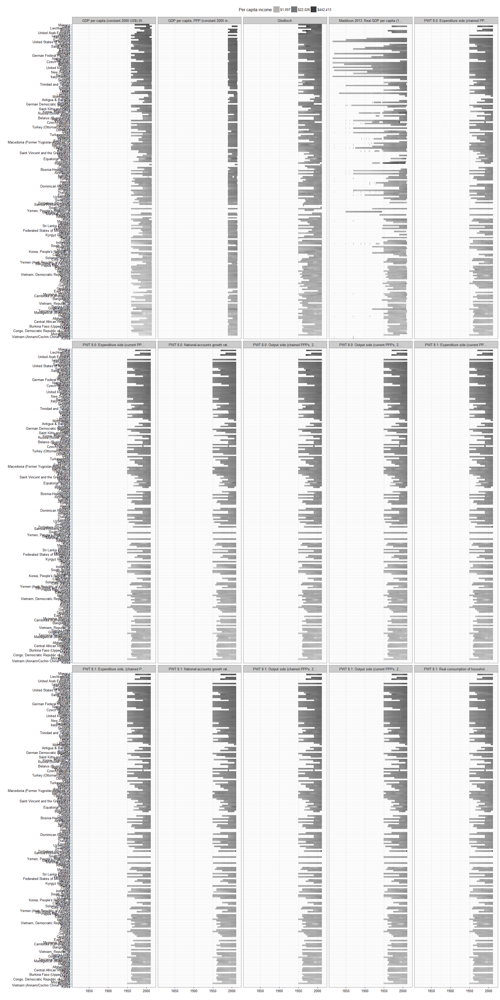
Inequality data
The inequality data is a summary of the Standardized World Income Inequality Database (Solt 2009; Solt 2016), version 5.0. The original data is available here. For more info, type ?swiid_summary_5.
These come with measures of uncertainty, and are available for the following country-years:
ggplot(data = swiid_summary_5 %>%
filter(in_system,
variable %in% c("gini_net", "gini_market")),
aes(x = year,
y = reorder(country_name, mean_value))) +
geom_tile(aes(alpha = mean_value)) +
labs(x= "",
y = "",
alpha = "Gini") +
theme_bw() +
theme(legend.position = "top") +
scale_alpha_continuous() +
facet_wrap(~variable, ncol = 2) +
scale_x_continuous(breaks = unique(c(swiid_summary_5$year[ swiid_summary_5$year %% 10 == 0],
max(swiid_summary_5$year),
min(swiid_summary_5$year))))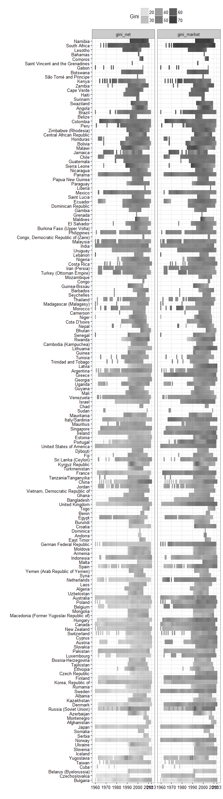
Oil and Gas data
The data on oil and gas comes from Ross and Mahdavi (Ross and Mahdavi 2015). The original data is available here.
Ross <- PoliticalDatasets::Ross %>%
select(country_name,
GWn,
year,
ross_country:eiacty,
oil_gas_value_2014,
GWc,
cown:in_system) %>%
filter(!is.na(oil_gas_value_2014), oil_gas_value_2014 > 0)
devtools::use_data(Ross, overwrite = TRUE)Violence data
Repression data
The data on repression comes from a latent variable index of repression (or, more precisely, of violations of physical integrity rights) created by Christopher Fariss (Fariss 2014). The data also includes a variety of additional measures of repression from other sources; type ?fariss for more info.
Here’s what the index looks like (more repressive periods in red):
ggplot(data = fariss,
aes(x = forcats::fct_rev(country_name),
y = year)) +
geom_tile(aes(fill = latentmean)) +
scale_fill_gradient2() +
labs(x = "",
fill = "Degree of repression \nviolations of physical integrity
(lower is more repressive)") +
theme_bw() +
theme(legend.position = "top") +
guides(fill = guide_legend(title.position = "top")) +
coord_flip() 
War data
For a number of graphs, I use version 2 of a list of wars compiled by Gleditsch (K. Gleditsch 2004), and available here. This comes in two forms: as a list of warring states, per year (all_war_participants_yearly, includingboth civil and interstate wars), and as a list of dyads (interstate_dyads_yearly, interstate wars only).
These data are available for the following countries:
ggplot(data = all_war_participants_yearly,
aes(x = year,
y = forcats::fct_rev(forcats::fct_infreq(country_name)))) +
geom_tile(aes(alpha = deaths+1, fill = type)) +
labs(x= "",
y = "",
alpha = "Total deaths",
fill = "War type") +
theme_bw() +
theme(legend.position = "top") +
scale_alpha_continuous(trans = "log", labels = round) +
scale_x_continuous(breaks = unique(c(all_war_participants_yearly$year[ all_war_participants_yearly$year %% 10 == 0],
max(all_war_participants_yearly$year),
min(all_war_participants_yearly$year))))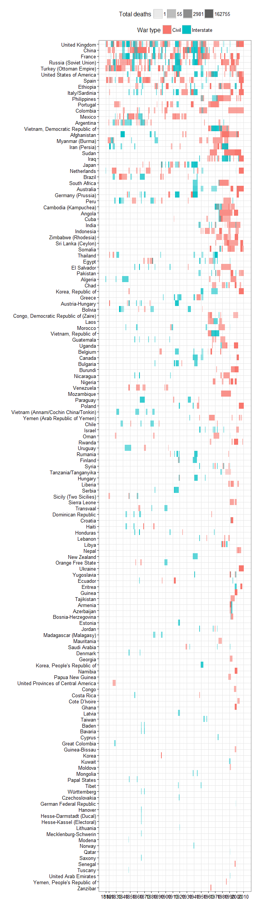
Violent and Non-violent campaigns
The data on violent and non-violent campaigns comes from the NAVCO dataset version 2.0 (Chenoweth and Lewis 2013). The original data is avialable here. Only a small selection of the variables in the original dataset are included; type ?navco_2 for more info.
These data ara available as for the following countries and campaigns:
ggplot(data = navco_2 %>%
mutate(campaign = stringr::str_trunc(paste0(country_name, ": ", campaign), 40, "right"),
camp_size = ifelse(camp_size < 0, NA, camp_size)),
aes(x = year,
y = forcats::fct_rev(campaign),
fill = factor(prim_method,
labels = c("Primarily violent","Primarily nonviolent")),
alpha = factor(success,
labels = c("Unsuccessful","Successful"),
ordered = TRUE))) +
geom_tile() +
geom_point(aes(size = camp_size,
color = factor(prim_method,
labels = c("Primarily violent","Primarily nonviolent")))) +
labs(x= "",
y = "",
alpha = "Success?",
fill = "Primary method of campaign",
color = "Primary method of campaign",
size = "Size of campaign") +
theme_bw() +
theme(legend.position = "top") +
guides(fill = guide_legend(title.position = "top")) 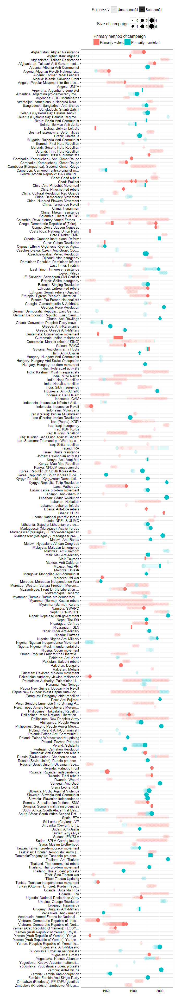
Map data
Some of the graphs in the text make use of map data. You can access this data by typing world. This map data represent country borders as of 2015; for historical country borders, you would need to use a package like cshapes.
Here’s an example of how to use the map data, plotting repression in 2013 throughout the world:
world <- world %>%
filter(id != "Antarctica")
data <- fariss %>%
filter(year == 2013)
library(ggalt)
ggplot() + geom_map(aes(fill = latentmean,
map_id = country_name),
map = world,
data = data) +
geom_path(data = world,
aes(y = lat, x = long, group = group)) +
scale_fill_gradient2(mid = "lightgrey") +
theme_minimal() +
theme(legend.position = "bottom") +
labs(fill = "Degree of repression
or violations of personal integrity
(lower is worse)",
x = "",
y = "") +
guides(fill = guide_legend(title.position = "top")) +
coord_proj("+proj=wintri") +
scale_y_continuous(breaks=NULL) +
scale_x_continuous(breaks=NULL) +
theme(legend.position = "bottom")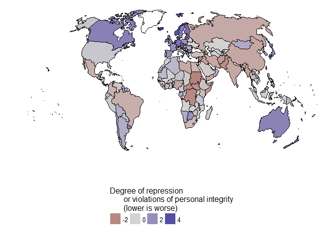
We can also use the package cshapes to plot earlier years, though this makes things more complicated. Here’s repression in 1967, the height of repression during the cultural revolution in CHina and the civil rights movement in the USA:
library(maptools)
library(rgeos)
world_1967 <- cshapes::cshp(as.Date("1967-1-1")) %>%
fortify(region = "GWCODE") %>%
mutate(GWn = id)
ggplot() +
geom_path(data = world,
aes(y = lat, x = long, group = group)) +
geom_map(aes(fill = latentmean,
map_id = GWn),
map = world_1967,
data = fariss %>% filter(year == 1967)) +
geom_path(data = world_1967,
aes(y = lat, x = long, group = group)) +
scale_fill_gradient2(mid = "lightgrey") +
theme_minimal() +
theme(legend.position = "bottom") +
labs(fill = "Degree of repression
or violations of personal integrity
(lower is worse)",
x = "",
y = "") +
guides(fill = guide_legend(title.position = "top")) +
coord_proj("+proj=wintri") +
scale_y_continuous(breaks=NULL) +
scale_x_continuous(breaks=NULL) +
theme(legend.position = "bottom")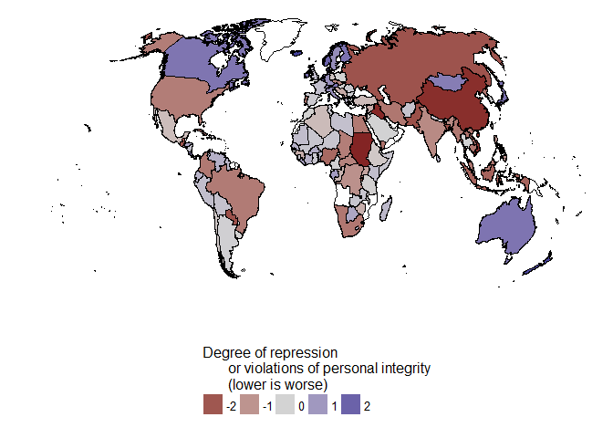
Data documentation
Finally, we document all the data:
label_data <- readr::read_csv("data_labels.csv")
library(documenteR)
doc_skeleton(find_all_datasets("AuthoritarianismBook"), label_data = label_data)
devtools::document()## Writing NAMESPACE
## Writing AuthoritarianismBook.Rd
## Writing PIPE.Rd
## Writing all_elections.Rd
## Writing all_gwf.Rd
## Writing all_gwf_extended_yearly.Rd
## Writing all_gwf_periods.Rd
## Writing all_war_participants_yearly.Rd
## Writing archigos.Rd
## Writing democracy.Rd
## Writing democracy_mentions_yearly.Rd
## Writing economic_data.Rd
## Writing extended_uds.Rd
## Writing fariss.Rd
## Writing interstate_dyads_yearly.Rd
## Writing kailitz_yearly.Rd
## Writing lied.Rd
## Writing magaloni.Rd
## Writing magaloni_extended.Rd
## Writing navco_2.Rd
## Writing nelda.Rd
## Writing personal_scores.Rd
## Writing polity_annual.Rd
## Writing population_data.Rd
## Writing powell_thyne.Rd
## Writing svolik_institutions.Rd
## Writing svolik_leader.Rd
## Writing swiid_summary_5.Rd
## Writing vdem.Rd
## Writing wahman_teorell.Rd
## Writing world.RdReferences
Chenoweth, Erica, and Orion A Lewis. 2013. “Unpacking Nonviolent Campaigns: Introducing the Navco 2.0 Dataset.” Journal of Peace Research 50 (3): 415–23. doi:10.1177/0022343312471551.
Coppedge, Michael, John Gerring, Staffan I. Lindberg, Svend-Erik Skaaning, Jan Teorell with David Altman, Michael Bernhard, M. Steven Fish, et al. 2015. “V-Dem Codebook V5.” Varieties of Democracy (V-Dem) Project.
Fariss, Christopher J. 2014. “Respect for Human Rights Has Improved over Time: Modeling the Changing Standard of Accountability.” American Political Science Review 108 (02): 297–318. doi:doi:10.1017/S0003055414000070.
Feenstra, Robert Inklaar, Robert C., and Marcel P. Timmer. 2013. “The Next Generation of the Penn World Table.” Dataset. www.ggdc.net/pwt.
Geddes, Barbara, Joseph Wright, and Erica Frantz. 2014. “Autocratic Breakdown and Regime Transitions: A New Data Set.” Perspectives on Politics 12 (1): 313–31. doi:10.1017/S1537592714000851.
Gleditsch, Kristian. 2004. “A Revised List of Wars Between and Within Independent States, 1816-2002.” International Interactions 30 (3): 231–62. http://privatewww.essex.ac.uk/~ksg/expwar.html.
———. 2010. “Expanded Population Data.” http://privatewww.essex.ac.uk/~ksg/exppop.html.
Gleditsch, Kristian Skrede. 2002. “Expanded Trade and Gdp Data.” Journal of Conflict Resolution 46 (5): 712–24. doi:10.1177/0022002702046005006.
Goemans, Henk, Kristian Gleditsch, and Giacomo Chiozza. 2009. “Introducing Archigos: A Dataset of Political Leaders.” Journal of Peace Research 46 (2): 269–83.
Hyde, Susan D., and Nikolay Marinov. 2012. “Which Elections Can Be Lost?” Political Analysis 20 (2): 191–210. doi:10.1093/pan/mpr040.
Kailitz, Steffen. 2013. “Classifying Political Regimes Revisited: Legitimation and Durability.” Democratization 20 (1): 39–60. doi:10.1080/13510347.2013.738861.
Magaloni, Beatriz, Jonathan Chu, and Eric Min. 2013. “Autocracies of the World, 1950-2012 (Version 1.0).” Dataset. http://cddrl.fsi.stanford.edu/research/autocracies_of_the_world_dataset.
Marshall, Monty G., Ted Robert Gurr, and Keith Jaggers. 2010. “Polity IV Project: Political Regime Characteristics and Transitions, 1800-2009.” Data set. Center for Systemic Peace. http://www.systemicpeace.org/inscr/inscr.htm.
Márquez, Xavier. 2016. “A Quick Method for Extending the Unified Democracy Scores.” Available at SSRN 2753830. doi:10.2139/ssrn.2753830.
Ortiz-Ospina, Esteban, and Max Roser. 2016. “World Population Growth.” Our World in Data. https://ourworldindata.org/world-population-growth/.
Pemstein, Daniel, Stephen Meserve, and James Melton. 2010. “Democratic Compromise: A Latent Variable Analysis of Ten Measures of Regime Type.” Political Analysis 18 (4): 426–49. doi:10.1093/pan/mpq020.
Powell, Jonathan M., and Clayton L. Thyne. 2011. “Global Instances of Coups from 1950 to 2010: A New Dataset.” Journal of Peace Research 48 (2): 249–59.
Przeworski, Adam. 2013. “Political Institutions and Political Events (PIPE) Data Set.” Data set. Department of Politics, New York University. https://sites.google.com/a/nyu.edu/adam-przeworski/home/data.
Ross, Michael, and Paasha Mahdavi. 2015. “Oil and Gas Data, 1932-2014.” Dataset. Harvard Dataverse. doi:10.7910/DVN/ZTPW0Y.
Skaaning, Svend-Erik, John Gerring, and Henrikas Bartusevičius. 2015. “A Lexical Index of Electoral Democracy.” Comparative Political Studies 48 (12): 1491–1525. doi:10.1177/0010414015581050.
Solt, Frederick. 2009. “Standardizing the World Income Inequality Database.” Social Science Quarterly 90 (2): 231–42. http://fsolt.org/swiid/.
———. 2016. “The Standardized World Income Inequality Database.” Social Science Quarterly, n/a–n/a. doi:10.1111/ssqu.12295.
Svolik, Milan. 2012. The Politics of Authoritarian Rule. Book. Cambridge; New York: Cambridge University Press.
The Maddison Project. 2013. “The Maddison Project.” Dataset. http://www.ggdc.net/maddison/maddison-project/home.htm.
Wahman, Michael, Jan Teorell, and Axel Hadenius. 2013. “Authoritarian Regime Types Revisited: Updated Data in Comparative Perspective.” Contemporary Politics 19 (1): 19–34. https://sites.google.com/site/authoritarianregimedataset/data.